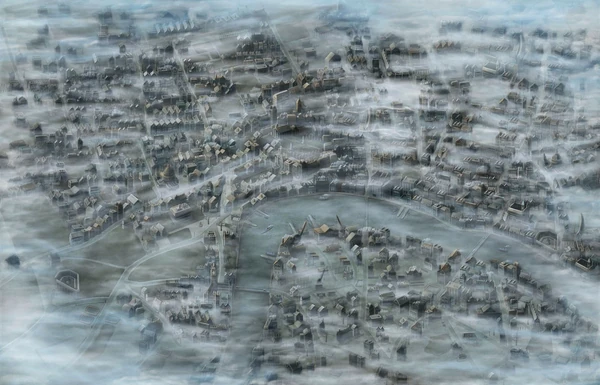

Le quatrième Grand Order se déroule en 1888 durant la révolution industrielle, une période
dans laquelle l'Empire Britannique a atteint un niveau de développement et de prospérité sans précédent.
Londres est mystérieusement coupée du monde par un brouillard léthal venu d'un autre monde. Au plus profond
des miasmes, le quatrième Saint Graal s'agite...
Carte

Mordred
Mordred est un Chevalier de la Table Ronde et le bâtard du Roi Arthur. Le Chevalier de la
trahison qui a tué son père à la Colline de Camlann, mettant fin à la légende Arthurienne.